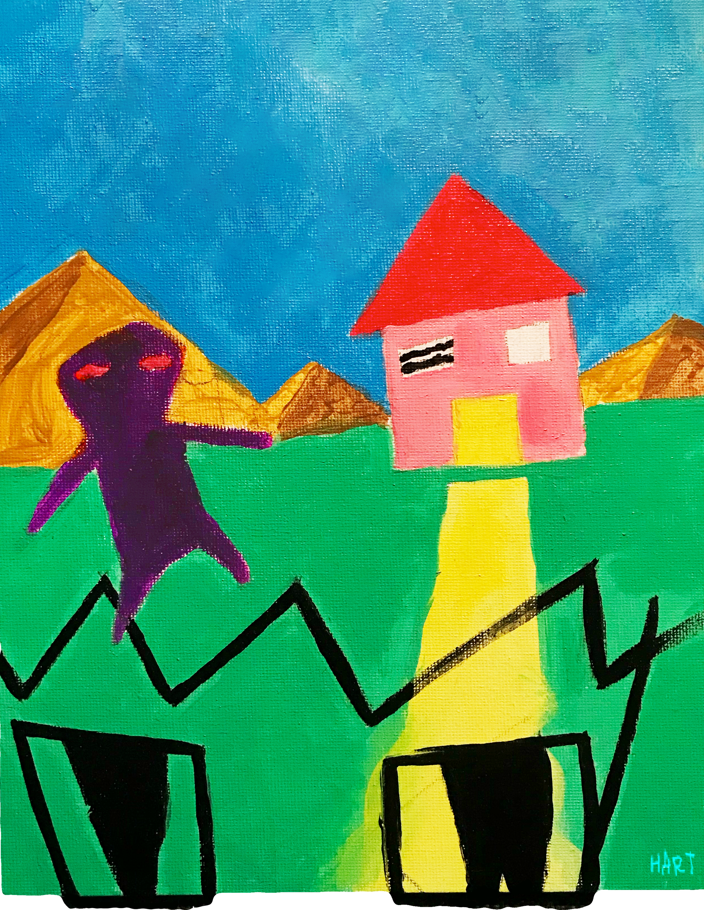
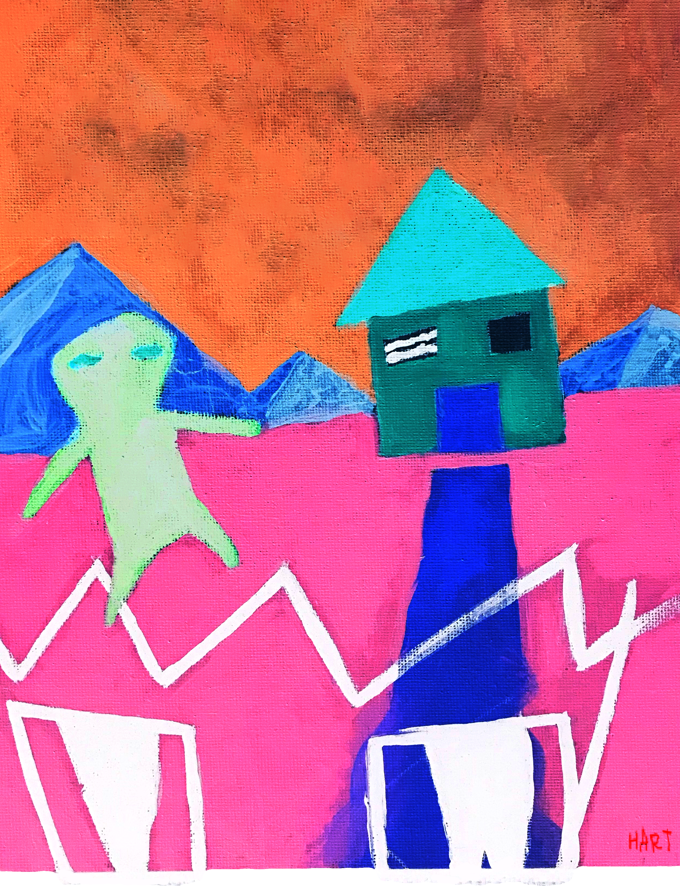
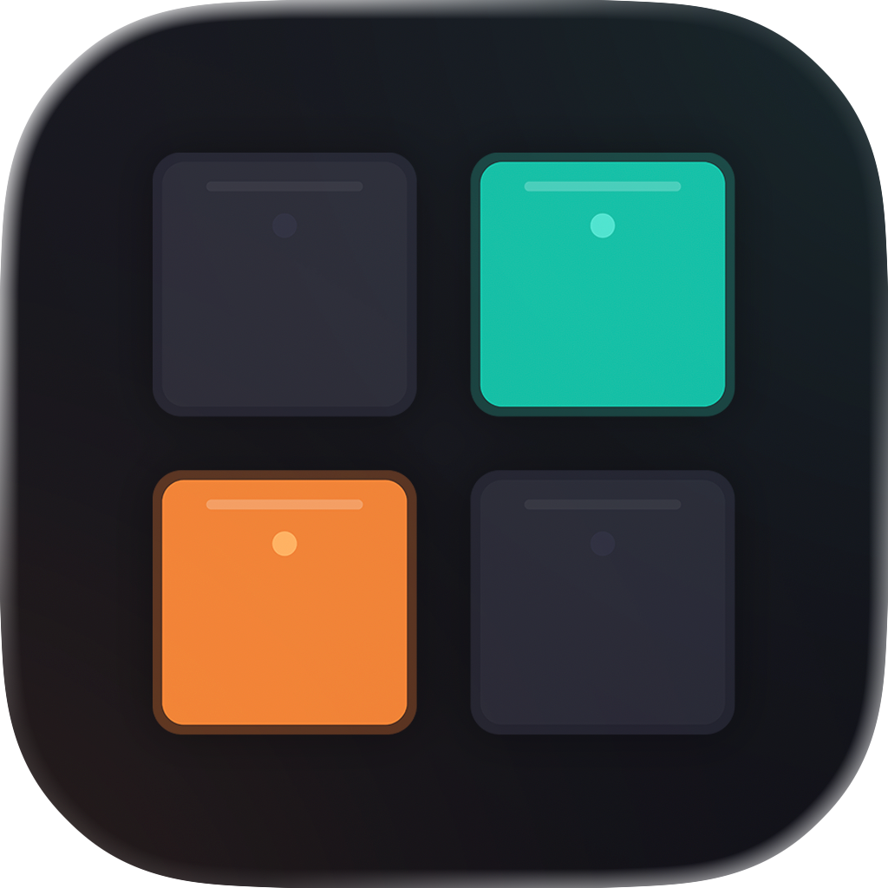

Maggio 2001
Napoli
Nato a Napoli — una città dove rumore, bellezza e improvvisazione fanno parte del programma.


Studente magistrale in Ingegneria dei Materiali alla Federico II. Produttore di musica elettronica. Ex studente dell'Apple Developer Academy e vincitore della Swift Student Challenge 2026.
2001 → Oggi · Napoli
Ingegneria, design, suono e codice — sempre guidato dalla curiosità. Eccolo, nell'ordine in cui è realmente successo.
Nato a Napoli — una città dove rumore, bellezza e improvvisazione fanno parte del programma.
Ho iniziato a disegnare da bambino. Col tempo è diventata un'abitudine — schizzo di continuo, e alcuni schizzi diventano qualcosa di più. È ancora da lì che parte ogni mio progetto.
Un regalo di mio padre: un portatile eMachines. Ci ho smanettato tanto — ho dovuto romperlo più volte prima di capire come non romperlo. Quel ciclo di rotture e riparazioni non si è più fermato.
A 14 anni ho aperto una DAW per la prima volta e non l'ho più chiusa. Produttore autodidatta: composizione, sound design, mixing, mastering — un decennio di allenamento dell'orecchio, pubblicato come Hart.
Cinque anni di matematica, fisica, latino e angoscia esistenziale al Liceo Tito Lucrezio Caro, Napoli. Dove il metodo scientifico è diventato un riflesso.
Vinto un programma di inglese di due settimane finanziato dall'UE al Bournville College di Birmingham — poco prima che la Brexit cambiasse le regole. Tornato con un inglese più solido e il gusto di lavorare tra culture diverse; certificato Cambridge C1 l'anno successivo.
Laurea triennale in Scienza e Ingegneria dei Materiali alla Federico II (101/110). Anni di lavoro in laboratorio — reologia, spettroscopia, schiumatura chimica dei poliuretani. Tesi sui materiali porosi fonoassorbenti: la prima volta che i miei due mondi si sono incontrati ufficialmente.
Il suono si è esteso a sistemi visivi in tempo reale con TouchDesigner. Quando l'audio diventa geometria: la performance come loop di feedback dal vivo tra segnale audio e immagini generate.
Barista in un negozio di dischi a Napoli — a versare drink tra le casse di vinili. Non una scelta di carriera; ne è valsa assolutamente la pena.
Ho formalizzato un decennio di autoformazione in campo audio con una qualifica della Regione Campania: sound design, routing del segnale in sistemi audio e AV dal vivo, mixaggio live, registrazione in studio. Tirocinio al Teatro TAN, Napoli — lavoro pratico di audio live e AV di scena.
Ora alla magistrale alla Federico II, con un focus personale sull'incontro tra materiali e suono — l'acustica come problema ingegneristico.
Programma a tempo pieno alla Federico II su sviluppo app, design e innovazione. Ho realizzato 7 app tra progetti di team e individuali — diverse con AI on-device (FoundationModels, Vision), pubblicate su App Store e TestFlight.
Tutto è confluito in PocketChop — un sample slicer e step sequencer per iPad, realizzato interamente in Swift Playgrounds. La mano che disegna, l'orecchio del producer, il metodo dell'ingegnere, tutto in un'unica app. Apple l'ha scelta come vincitrice della Swift Student Challenge 2026.
Quattro ambiti, un solo metodo: capire il materiale, plasmare il segnale, spedire lo strumento.
Caratterizzazione dei materiali · Reologia · Spettroscopia · Schiumatura chimica · Prove meccaniche · Standard ASTM · COMSOL · MATLAB · AutoCAD
Ableton Live · Logic Pro · FL Studio · Pro Tools · Sound design · Mix e master · Mixaggio live · Registrazione in studio
Swift / SwiftUI · UIKit · AVFoundation · AudioKit · Xcode · C++ · Git / GitHub · AI on-device (FoundationModels, Vision)
TouchDesigner · Illustrator · Photoshop · After Effects · Premiere Pro · Blender · Figma · Artwork di copertina e merchandising
Lingue: Italiano — madrelingua · Inglese — C1, Cambridge Advanced · Spagnolo — base

Sample slicer e step sequencer per iPad. Realizzato interamente in Swift Playgrounds.
Cosa fa
Importa qualsiasi file audio, taglialo in un massimo di 16 regioni con nome, assegna ciascuna a un pad e costruisci pattern in uno step sequencer a 64 step. Include piano roll, FX per singolo pad, inviluppi ADSR e registrazione del mix completo — tutto offline, senza bisogno di internet. Linguaggio di design ispirato all'hardware di teenage engineering.
Perché l'ho creato
Volevo un vero strumento di produzione che girasse interamente su iPad — niente laptop, niente abbonamento. PocketChop sta al centro delle tre cose che faccio: suono, precisione ingegneristica e artigianato iOS.
Apple Developer Academy 2025/2026
Progetti di team e individuali realizzati in Academy — diversi con AI on-device, pubblicati su App Store e TestFlight.
Hart · Produzione e Artwork
Un decennio di produzione, pubblicato come Hart — composizione, sound design, mixing e ogni artwork di copertina.